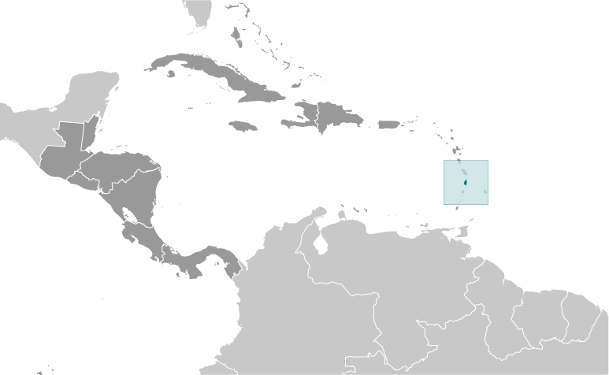
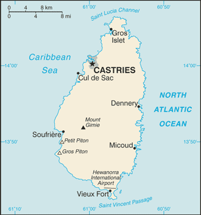

Central America and Caribbean :: SAINT LUCIA
Introduction :: SAINT LUCIA
-
The island, with its fine natural harbor at Castries, was contested between England and France throughout the 17th and early 18th centuries (changing possession 14 times); it was finally ceded to the UK in 1814. Even after the abolition of slavery on its plantations in 1834, Saint Lucia remained an agricultural island, dedicated to producing tropical commodity crops. Self-government was granted in 1967 and independence in 1979.
Geography :: SAINT LUCIA
-
Caribbean, island between the Caribbean Sea and North Atlantic Ocean, north of Trinidad and Tobago13 53 N, 60 58 WCentral America and the Caribbeantotal: 616 sq kmland: 606 sq kmwater: 10 sq kmcountry comparison to the world: 193three and a half times the size of Washington, DC0 km158 kmterritorial sea: 12 nmcontiguous zone: 24 nmexclusive economic zone: 200 nmcontinental shelf: 200 nm or to the edge of the continental margintropical, moderated by northeast trade winds; dry season January to April, rainy season May to Augustvolcanic and mountainous with broad, fertile valleysmean elevation: NAelevation extremes: lowest point: Caribbean Sea 0 mhighest point: Mount Gimie 948 mforests, sandy beaches, minerals (pumice), mineral springs, geothermal potentialagricultural land: 17.4%arable land 4.9%; permanent crops 11.5%; permanent pasture 1%forest: 77%other: 5.6% (2011 est.)30 sq km (2012)most of the population is found on the periphery of the island, with a larger concentration in the north around the capital of Castrieshurricanesvolcanism: Mount Gimie (948 m), also known as Qualibou, is a caldera on the west of the island; the iconic twin pyramidal peaks of Gros Piton (771 m) and Petit Piton (743 m) are lava dome remnants associated with the Soufriere volcano; there have been no historical magmatic eruptions, but a minor steam eruption in 1766 spread a thin layer of ash over a wide area; Saint Lucia is part of the volcanic island arc of the Lesser Antilles that extends from Saba in the north to Grenada in the southdeforestation; soil erosion, particularly in the northern regionparty to: Biodiversity, Climate Change, Climate Change-Kyoto Protocol, Desertification, Endangered Species, Environmental Modification, Hazardous Wastes, Law of the Sea, Marine Dumping, Ozone Layer Protection, Ship Pollution, Wetlands, Whalingsigned, but not ratified: none of the selected agreementsthe twin Pitons (Gros Piton and Petit Piton), striking cone-shaped peaks south of Soufriere, are one of the scenic natural highlights of the Caribbean
People and Society :: SAINT LUCIA
-
164,994 (July 2017 est.)country comparison to the world: 187noun: Saint Lucian(s)adjective: Saint Lucianblack/African descent 85.3%, mixed 10.9%, East Indian 2.2%, other 1.6%, unspecified 0.1% (2010 est.)English (official), French patoisRoman Catholic 61.5%, Protestant 25.5% (includes Seventh Day Adventist 10.4%, Pentecostal 8.9%, Baptist 2.2%, Anglican 1.6%, Church of God 1.5%, other Protestant 0.9%), other Christian 3.4% (includes Evangelical 2.3% and Jehovah's Witness 1.1%), Rastafarian 1.9%, other 0.4%, none 5.9%, unspecified 1.4% (2010 est.)0-14 years: 20.02% (male 17,006/female 16,027)15-24 years: 15.37% (male 12,870/female 12,492)25-54 years: 42.97% (male 34,117/female 36,779)55-64 years: 9.99% (male 7,608/female 8,881)65 years and over: 11.65% (male 8,704/female 10,510) (2017 est.)total dependency ratio: 41.1youth dependency ratio: 27.9elderly dependency ratio: 13.3potential support ratio: 7.5 (2015 est.)total: 34.8 yearsmale: 33.7 yearsfemale: 36 years (2017 est.)country comparison to the world: 840.32% (2017 est.)country comparison to the world: 17013.3 births/1,000 population (2017 est.)country comparison to the world: 1447.7 deaths/1,000 population (2017 est.)country comparison to the world: 103-2.5 migrant(s)/1,000 population (2017 est.)country comparison to the world: 171most of the population is found on the periphery of the island, with a larger concentration in the north around the capital of Castriesurban population: 18.6% of total population (2017)rate of urbanization: 1.01% annual rate of change (2015-20 est.)CASTRIES (capital) 22,000 (2014)at birth: 1.06 male(s)/female0-14 years: 1.06 male(s)/female15-24 years: 1.03 male(s)/female25-54 years: 0.93 male(s)/female55-64 years: 0.86 male(s)/female65 years and over: 0.83 male(s)/femaletotal population: 0.95 male(s)/female (2016 est.)48 deaths/100,000 live births (2015 est.)country comparison to the world: 97total: 10.9 deaths/1,000 live birthsmale: 10.4 deaths/1,000 live birthsfemale: 11.4 deaths/1,000 live births (2017 est.)country comparison to the world: 129total population: 77.9 yearsmale: 75.2 yearsfemale: 80.8 years (2017 est.)country comparison to the world: 661.75 children born/woman (2017 est.)country comparison to the world: 16155.5% (2011/12)6.7% of GDP (2014)country comparison to the world: 870.1 physicians/1,000 population (2009)1.6 beds/1,000 population (2011)improved:urban: 99.5% of populationrural: 95.6% of populationtotal: 96.3% of populationunimproved:urban: 0.5% of populationrural: 4.4% of populationtotal: 3.7% of population (2015 est.)improved:urban: 84.7% of populationrural: 91.9% of populationtotal: 90.5% of populationunimproved:urban: 15.3% of populationrural: 8.1% of populationtotal: 9.5% of population (2015 est.)NANANAnote: active local transmission of Zika virus by Aedes species mosquitoes has been identified in this country (as of August 2016); it poses an important risk (a large number of cases possible) among US citizens if bitten by an infective mosquito; other less common ways to get Zika are through sex, via blood transfusion, or during pregnancy, in which the pregnant woman passes Zika virus to her fetus (2016)19.7% (2016)country comparison to the world: 1102.8% (2012)country comparison to the world: 1164.8% of GDP (2015)country comparison to the world: 107total: 13 yearsmale: 12 yearsfemale: 13 years (2007)total: 27.5%male: 21.5%female: 35.2% (2007 est.)country comparison to the world: 12
Government :: SAINT LUCIA
-
conventional long form: noneconventional short form: Saint Luciaetymology: named after Saint LUCY of Syracuse by French sailors who were shipwrecked on the island on 13 December 1502, the saint's feast dayparliamentary democracy (Parliament) under a constitutional monarchy; a Commonwealth realmname: Castriesgeographic coordinates: 14 00 N, 61 00 Wtime difference: UTC-4 (1 hour ahead of Washington, DC, during Standard Time)10 districts; Anse-la-Raye, Canaries, Castries, Choiseul, Dennery, Gros-Islet, Laborie, Micoud, Soufriere, Vieux-Fort22 February 1979 (from the UK)Independence Day, 22 February (1979)previous 1958, 1960 (preindependence); latest presented 20 December 1978, effective 22 February 1979; note - in mid-2015, an amendment was proposed to replace the London-based Privy Council with the Caribbean Court of Justice as the country's highest appellate court (2016)English common lawhas not submitted an ICJ jurisdiction declaration; accepts ICCt jurisdictioncitizenship by birth: yescitizenship by descent: at least one parent must be a citizen of Saint Luciadual citizenship recognized: yesresidency requirement for naturalization: 8 years18 years of age; universalchief of state: Queen ELIZABETH II (since 6 February 1952); represented by Governor General Dame Pearlette LOUISY (since September 1997)head of government: Prime Minister Allen CHASTANET (since 7 June 2016)cabinet: Cabinet appointed by the governor general on the advice of the prime ministerelections/appointments: the monarchy is hereditary; governor general appointed by the monarch; following legislative elections, the leader of the majority party or majority coalition usually appointed prime minister by governor general; deputy prime minister appointed by governor generaldescription: bicameral Parliament consists of the Senate (11 seats; 6 members appointed on the advice of the prime minister, 3 on the advice of the leader of the opposition, and 2 upon consultation with religious, economic, and social groups; members serve 5-year terms) and the House of Assembly (17 seats; members directly elected in single-seat constituencies by simple majority vote to serve 5-year terms)elections: House of Assembly - last held on 6 June 2016 (next to be held in 2021)election results: House of Assembly - percent of vote by party - UWP 54.8%, SLP 44.1%, other 1.1%; seats by party - UWP 11, SLP 6highest court(s): the Eastern Caribbean Supreme Court (ECSC) is the superior court of the Organization of Eastern Caribbean States; the ECSC - headquartered on St. Lucia - consists of the Court of Appeal - headed by the chief justice and 4 judges - and the High Court with 18 judges; the Court of Appeal is itinerant, travelling to member states on a schedule to hears appeals from the High Court and subordinate courts; High Court judges reside at the member states with 4 on Saint Lucia; Saint Lucia is a member of the Caribbean Court of Justicejudge selection and term of office: chief justice of Eastern Caribbean Supreme Court appointed by Her Majesty, Queen ELIZABETH II; other justices and judges appointed by the Judicial and Legal Services Commission, an independent body of judicial officials; Court of Appeal justices appointed for life with mandatory retirement at age 65; High Court judges appointed for life with mandatory retirement at age 62subordinate courts: magistrate's courtLucian People's Movement or LPM [Therold PRUDENT]Saint Lucia Labor Party or SLP [Philip J. PIERRE]United Workers Party or UWP [Allen CHASTANET]NAACP, AOSIS, C, Caricom, CD, CDB, CELAC, FAO, G-77, IBRD, ICAO, ICCt, ICRM, IDA, IFAD, IFC, IFRCS, ILO, IMF, IMO, Interpol, IOC, ISO, ITU, ITUC (NGOs), MIGA, NAM, OAS, OECS, OIF, OPANAL, OPCW, Petrocaribe, UN, UNCTAD, UNESCO, UNIDO, UPU, WCO, WFTU (NGOs), WHO, WIPO, WMO, WTOchief of mission: Ambassador Anton Edsel EDMUNDS (since 8 September 2017)chancery: 3216 New Mexico Avenue NW, Washington, DC 20016telephone: [1] (202) 364-6792 through 6795FAX: [1] (202) 364-6723consulate(s) general: New Yorkthe US does not have an embassy in Saint Lucia; the US Ambassador to Barbados is accredited to Saint Luciacerulean blue with a gold isosceles triangle below a black arrowhead; the upper edges of the arrowhead have a white border; the blue color represents the sky and sea, gold stands for sunshine and prosperity, and white and black the racial composition of the island (with the latter being dominant); the two major triangles invoke the twin Pitons (Gros Piton and Petit Piton), cone-shaped volcanic plugs that are a symbol of the islandtwin pitons (volcanic peaks), Saint Lucia parrot; national colors: cerulean blue, gold, black, whitename: "Sons and Daughters of St. Lucia"lyrics/music: Charles JESSE/Leton Felix THOMASnote: adopted 1967
Economy :: SAINT LUCIA
-
The island nation has been able to attract foreign business and investment, especially in its offshore banking and tourism industries. Tourism is Saint Lucia's main source of jobs and income - accounting for 65% of GDP - and the island's main source of foreign exchange earnings. The manufacturing sector is the most diverse in the Eastern Caribbean area. Crops such as bananas, mangos, and avocados continue to be grown for export, but St. Lucia's once solid banana industry has been devastated by strong competition.Saint Lucia is vulnerable to a variety of external shocks, including volatile tourism receipts, natural disasters, and dependence on foreign oil. Furthermore, high public debt - 77% of GDP in 2012 - and high debt servicing obligations constrain the CHASTANET administration's ability to respond to adverse external shocks.St. Lucia has experienced anemic growth since the onset of the global financial crisis in 2008, largely because of a slowdown in tourism - airlines cut back on their routes to St. Lucia in 2012. Also, St. Lucia introduced a value added tax in 2012 of 15%, becoming the last country in the Eastern Caribbean to do so. In 2013, the government introduced a National Competitiveness and Productivity Council to address St. Lucia's high public wages and lack of productivity.$2.306 billion (2016 est.)$2.254 billion (2015 est.)$2.187 billion (2014 est.)note: data are in 2016 dollarscountry comparison to the world: 194$1.675 billion (2016 est.)1% (2016 est.)2% (2015 est.)-0.9% (2014 est.)country comparison to the world: 179$13,300 (2016 est.)$13,200 (2015 est.)$13,000 (2014 est.)note: data are in 2016 dollarscountry comparison to the world: 12821.3% of GDP (2016 est.)29% of GDP (2015 est.)25% of GDP (2014 est.)country comparison to the world: 137household consumption: 71.8%government consumption: 14.7%investment in fixed capital: 18%investment in inventories: 0.1%exports of goods and services: 38.7%imports of goods and services: -43.2% (2015 est.)agriculture: 2.9%industry: 13.9%services: 83.2% (2016 est.)bananas, coconuts, vegetables, citrus, root crops, cocoatourism; clothing, assembly of electronic components, beverages, corrugated cardboard boxes, lime processing, coconut processing4% (2016 est.)country comparison to the world: 6079,700 (2012 est.)country comparison to the world: 184agriculture: 21.7%industry: 24.7%services: 53.6% (2002 est.)20% (2003 est.)country comparison to the world: 185NA%lowest 10%: NA%highest 10%: NA%revenues: $390.6 millionexpenditures: $418.2 million (2016 est.)28.2% of GDP (2016 est.)country comparison to the world: 94-2% of GDP (2016 est.)country comparison to the world: 9082.9% of GDP (2016 est.)77.8% of GDP (2015 est.)country comparison to the world: 331 April - 31 March-3.1% (2016 est.)-1% (2015 est.)country comparison to the world: 26.5% (31 December 2010)6.5% (31 December 2009)country comparison to the world: 628.5% (31 December 2016 est.)8.86% (31 December 2015 est.)country comparison to the world: 97$318.4 million (31 December 2016 est.)$284.8 million (31 December 2015 est.)country comparison to the world: 177$1.157 billion (31 December 2016 est.)$1.131 billion (31 December 2015 est.)country comparison to the world: 171$1.332 billion (31 December 2016 est.)$1.399 billion (31 December 2015 est.)country comparison to the world: 161$-31 million (2016 est.)$-30.4 million (2015 est.)country comparison to the world: 61$188.2 million (2016 est.)$193.2 million (2015 est.)country comparison to the world: 187bananas 41%, clothing, cocoa, avocados, mangoes, coconut oil (2010 est.)US 48.8%, Trinidad and Tobago 14.1%, UK 11.2%, Maldives 4.7% (2016)$404.1 million (2016 est.)$421.7 million (2015 est.)country comparison to the world: 195food, manufactured goods, machinery and transportation equipment, chemicals, fuelsUS 39.8%, Trinidad and Tobago 18%, UK 6.7%, Japan 4% (2016)$523.2 million (31 December 2016 est.)$529 million (31 December 2015 est.)country comparison to the world: 177East Caribbean dollars (XCD) per US dollar -2.7 (2016 est.)2.7 (2015 est.)2.7 (2014 est.)2.7 (2013 est.)2.7 (2012 est.))
Energy :: SAINT LUCIA
-
population without electricity: 16,446electrification - total population: 91%electrification - urban areas: 100%electrification - rural areas: 80% (2012)358 million kWh (2015 est.)country comparison to the world: 174332.9 million kWh (2015 est.)country comparison to the world: 1780 kWh (2016 est.)country comparison to the world: 1990 kWh (2016 est.)country comparison to the world: 20389,000 kW (2015 est.)country comparison to the world: 17998.9% of total installed capacity (2015 est.)country comparison to the world: 330% of total installed capacity (2015 est.)country comparison to the world: 1840% of total installed capacity (2015 est.)country comparison to the world: 2051.1% of total installed capacity (2015 est.)country comparison to the world: 1360 bbl/day (2016 est.)country comparison to the world: 1960 bbl/day (2014 est.)country comparison to the world: 1930 bbl/day (2014 est.)country comparison to the world: 1910 bbl (1 January 2017 es)country comparison to the world: 1950 bbl/day (2014 est.)country comparison to the world: 1993,100 bbl/day (2015 est.)country comparison to the world: 1860 bbl/day (2014 est.)country comparison to the world: 1993,058 bbl/day (2014 est.)country comparison to the world: 1780 cu m (2013 est.)country comparison to the world: 1960 cu m (2013 est.)country comparison to the world: 1320 cu m (2013 est.)country comparison to the world: 1840 cu m (2013 est.)country comparison to the world: 1890 cu m (1 January 2014 es)country comparison to the world: 196400,000 Mt (2013 est.)country comparison to the world: 188
Communications :: SAINT LUCIA
-
total subscriptions: 35,003subscriptions per 100 inhabitants: 21 (July 2016 est.)country comparison to the world: 171total: 176,648subscriptions per 100 inhabitants: 107 (July 2016 est.)country comparison to the world: 181general assessment: an adequate system that is automatically switcheddomestic: fixed-line teledensity is 20 per 100 persons and mobile-cellular teledensity is roughly 105 per 100 personsinternational: country code - 1-758; the East Caribbean Fiber System and Southern Caribbean Fiber submarine cables, along with Intelsat from Martinique, carry calls internationally; direct microwave radio relay link with Martinique and Saint Vincent and the Grenadines; tropospheric scatter to Barbados (2016)3 privately owned TV stations; 1 public TV station operating on a cable network; multi-channel cable TV service available; a mix of state-owned and privately owned broadcasters operate nearly 25 radio stations including repeater transmission stations (2007).lctotal: 86,000percent of population: 52.4% (July 2016 est.)country comparison to the world: 166
Transportation :: SAINT LUCIA
-
J6 (2016)2 (2013)country comparison to the world: 204total: 22,438 to 3,047 m: 11,524 to 2,437 m: 1 (2017)total: 1,210 kmpaved: 847 kmunpaved: 363 km (2011)country comparison to the world: 182major seaport(s): Castries, Cul-de-Sac, Vieux-Fort
Military and Security :: SAINT LUCIA
-
no regular military forces; Royal Saint Lucia Police Force (includes Special Service Unit, Marine Unit) (2012)18 years of age for voluntary security service; no national army (2012)
Transnational Issues :: SAINT LUCIA
-
joins other Caribbean states to counter Venezuela's claim that Aves Island sustains human habitation, a criterion under UN Convention on the Law of the Sea, which permits Venezuela to extend its EEZ/continental shelf over a large portion of the eastern Caribbean Seatransit point for South American drugs destined for the US and Europe